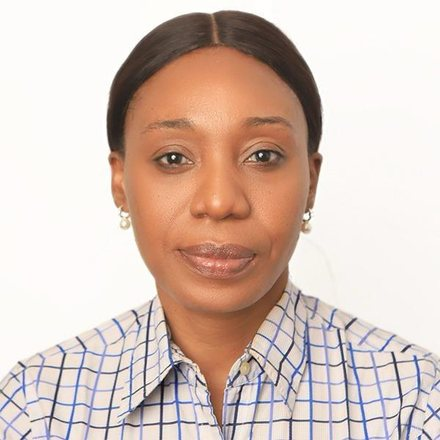

Our people
Pamela Enamhe
- Member, Board of Trustees, Nigeria
Pamela is a development finance professional with 20 years of experience spanning banking, strategy, risk management, business analysis, data analysis and institutional development.
She is Head of the Credit Review Unit in the Risk Management Group of the Federal Mortgage Bank of Nigeria (FMBN), and Secretary of the Bank’s Management Credit Committee. She has held leadership roles in strategy, business process improvement, performance management and internal audit.
A Certified Business Analysis Professional (CBAP), she holds ACCA certifications in Data Analysis and Internal Audit, an M.Sc. in Banking and Finance and a B.Sc. in Economics.
She is the founder of the Pam-Zake Development Initiative (PDI), which works on housing finance, financial inclusion, community development, youth empowerment and policy engagement, with particular attention to informal-sector households and underserved communities.